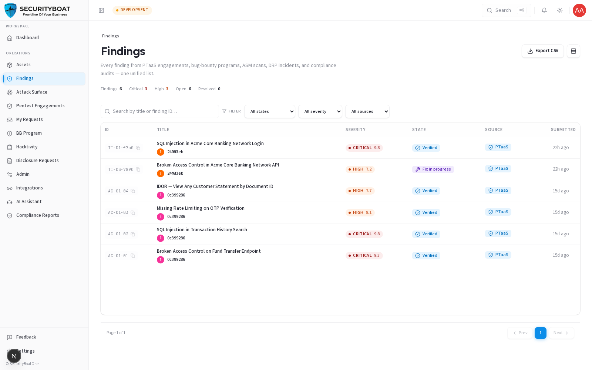
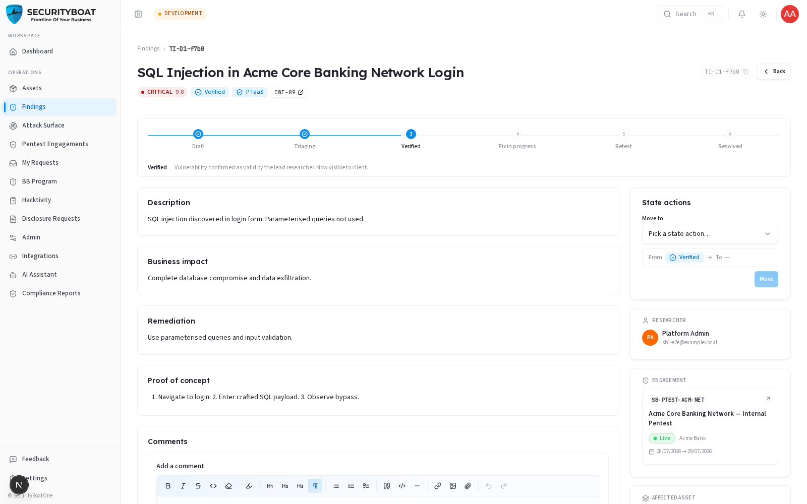
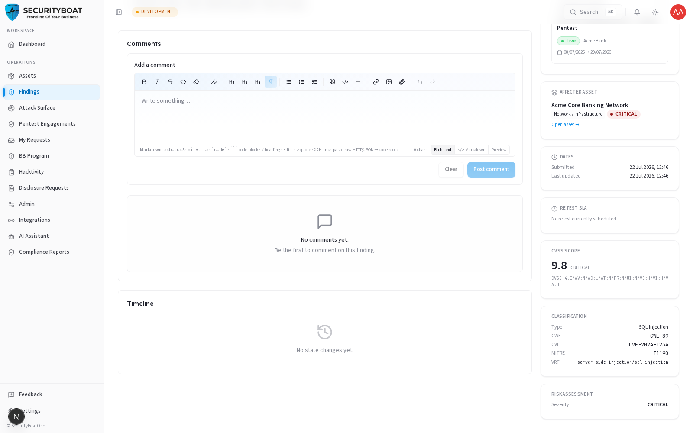

05. Findings
5. Findings
5.0 What a "finding" is and why the module works the way it does
A finding is a single, documented security issue discovered on one of your assets — a SQL injection, a broken access control, an exposed secret, and so on. Tri-Netra keeps one unified findings list regardless of where the issue came from:
| Source | Where it originates |
|---|---|
| PTaaS | A scheduled penetration-test engagement. |
| Bug Bounty | A researcher submission against a bug-bounty program. |
| ASM | Attack-surface monitoring scans. |
| DRP | Digital-risk / incident detections. |
| Compliance | Issues raised during a compliance audit. |
Unifying them means you triage and remediate in one place instead of chasing five different tools.
The single most important rule for clients — visibility:
You only see a finding after it has been verified by SecurityBoat's testing team. A finding that is still a
DRAFTorNEW(submitted but not yet quality-checked) is invisible to every client role. This is deliberate: raw, unverified submissions can contain false positives or mis-scored severity. Showing them to you before a TPM validates them would create noise and false alarms. The states you can see are: Verified, Fix in progress, Ready for retest, Accepted risk, Resolved.
This is why your list may show fewer findings than testers are actively working on — the pre-verification ones simply aren't surfaced yet.
5.1 What each client role can do
| Action | Client Admin | Client TPM | Client Viewer |
|---|---|---|---|
| View / search verified findings | ✅ | ✅ | ✅ |
| Open a finding's detail | ✅ | ✅ | ✅ |
| Export findings to CSV | ✅ | ✅ | ✅ |
| Add comments | ✅ | ✅ | ❌ |
| Mark Fix in progress / Ready for retest | ✅ | ✅ | ❌ |
| Accept risk (formally accept without fixing) | ✅ | ❌ | ❌ |
| Create a finding | ❌ | ❌ | ❌ |
Why clients can't create findings: a finding must be tied to a real source (an engagement, a program, a scan) so its provenance can't be forged. Creation is therefore anchored to that source resource and performed by the testing team, not from a free-form form. There is intentionally no "New finding" button on this page.
Navigation
Click Findings in the main sidebar menu.
5.2 The Findings list — every control explained

KPI tally row (top)
A flat count strip that respects your active filters:
| Tally | Meaning |
|---|---|
| Findings | Total findings visible to you. |
| Critical | Count at Critical severity (red when > 0). |
| High | Count at High severity. |
| Open | Everything not yet Resolved. |
| Resolved | Fixed and closed. |
Toolbar
| Control | Type | Behaviour |
|---|---|---|
| Export CSV | Button | Downloads findings-export-<date>.csv containing finding records (Finding ID, Title, Severity Rating, Status, Category, CVSS Score, CWE/CVE Reference, Affected Endpoint, Description, Impact, Remediation, Submitter Name, Created Date). Disabled when empty. |
| Density toggle | Toggle | Compact vs comfortable rows. |
Filters (saved in the URL)
Unlike the Assets filters, these are written to the URL, so a filtered view is shareable/bookmarkable.
| Filter | Type | Values / use case |
|---|---|---|
| Search | Text | Matches title or finding ID (e.g. paste an ID from an email). |
| State | Dropdown | Verified, Fix in progress, Ready for retest, Accepted risk, Resolved. |
| Severity | Dropdown | Critical / High / Medium / Low / Informational. |
| Source | Dropdown | PTaaS / Bug Bounty / ASM / DRP / Compliance. |
| Clear | Button | Resets all filters. |
Columns
| Column | Meaning |
|---|---|
| ID | The human finding ID (click the pill to copy it). |
| Title | Short name of the issue + the submitter (researcher/tester). |
| Severity | Colour-coded pill with the CVSS score shown alongside. |
| State | Main state badge, plus a "side-state" pill (e.g. duplicate) when relevant. |
| Source | Which module the finding came from. |
| Submitted | Relative time (e.g. "3d ago"). |
Paginated at 10 per page. Click a row to open the finding.
5.3 Understanding severity and CVSS
Every finding carries a severity and a CVSS v4.0 score/vector. Severity is the at-a-glance priority; the CVSS vector is the precise, standardised breakdown of why it scored that way (attack vector, complexity, impact on confidentiality/integrity/availability, etc.).
| Severity | Typical meaning |
|---|---|
| Critical | Immediate, severe risk — remediate now. |
| High | Serious; schedule promptly. |
| Medium | Meaningful but bounded. |
| Low | Minor. |
| Informational | No direct risk; awareness only. |
The platform standardises on CVSS v4.0 (not the older v3.1). If severity ever looks off, the detail page shows the full vector so you can see the reasoning — and you can discuss it via comments before accepting or remediating.
5.4 The finding detail page — fields and the remediation workflow
Click any finding to open it.


What each field means
| Field | Type | Meaning / how to use it |
|---|---|---|
| Title | Text | Short label for the issue. |
| Severity + CVSS | Enum + score/vector | Priority and its standardised justification. |
| Vulnerability type | Text | The class of issue (e.g. "SQL Injection"). |
| CWE / CVE | IDs | Links to the industry taxonomy / known-vuln database, where applicable. |
| Endpoint / URL | Text | Exactly where the issue was found. |
| Description | Rich text | What the issue is. |
| Impact | Rich text | What an attacker could achieve — the business risk. |
| Remediation | Rich text | How to fix it. This is your action plan. |
| Evidence | Attachments | Screenshots, request/response captures, PoC steps. |
| Submitter | User | The tester/researcher who reported it. |
| State history | Timeline | Every state change, who made it, and the note they left. |
The state lifecycle you drive
Once a finding is Verified (visible to you), remediation is a shared workflow. Use the State actions panel on the detail page:
VERIFIED ──▶ FIX IN PROGRESS ──▶ READY FOR RETEST ──▶ (tester retests) ──▶ RESOLVED
│
└──▶ ACCEPTED RISK (Client Admin only)
| Transition | Who | When to use it | Input required |
|---|---|---|---|
| Verified → Fix in progress | Client Admin / Client TPM | You've started remediating. | Optional/required note (the dialog tells you the minimum length). |
| Fix in progress → Ready for retest | Client Admin / Client TPM | Your fix is deployed; ask the tester to re-verify. | Note (often required). |
| → Accepted risk | Client Admin only | You've decided to formally accept the risk instead of fixing (business decision). | A justification note. |
| Ready for retest → Resolved | Tester (not you) | The tester confirms the fix works. | — |
To move a finding: pick the target in the "Move to" dropdown, review the From → To preview, click Move, and enter the note when prompted. The note is saved on both the state-history timeline and the comments thread, so there's an auditable record of every decision.
Why the required comments? Each transition is a contractual event. Requiring a reason keeps a defensible audit trail — essential for compliance and for the retest tester to know exactly what changed.
Comments
Use the comments thread to ask the tester questions ("is this exploitable behind our WAF?"), attach remediation notes, or dispute severity. Client Viewer can read but not post.
5.5 Export to CSV
Export CSV produces a full snapshot of the currently filtered findings — ideal for sharing a remediation backlog with your engineering team or handing evidence to auditors. Available to all client roles.
Best practices
- Work Critical/High first — the KPI tallies make the backlog obvious.
- Move findings through the states honestly. Marking "Ready for retest" before the fix is deployed just wastes a retest cycle.
- Use comments, don't email. Keeping the discussion on the finding preserves context for the retest and the final report.
- Accept risk deliberately. Only a Client Admin can, and it should carry a clear business justification in the note.
Troubleshooting
| Symptom | Cause / Fix |
|---|---|
| A finding I was told about isn't in my list | It hasn't been Verified yet — pre-verification findings are hidden from clients by design. It'll appear once the TPM verifies it. |
| No State-actions available | You're Client Viewer (read-only), or the finding is in a state you can't transition from (e.g. already Resolved). |
| Can't "Accept risk" | Only Client Admin can accept risk; Client TPM cannot. |
| "Move" button disabled | You haven't picked a target state yet, or a required note is too short — the dialog shows the minimum length. |
← Previous: Assets | Next: Engagements →